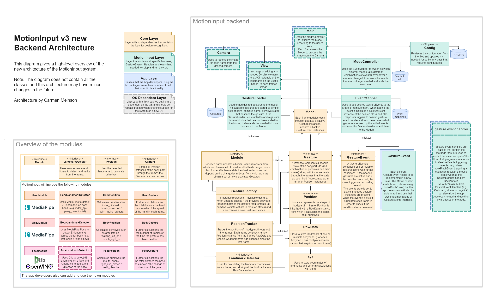

Setting Up
Expected to be run on Python 3.9 + Windows
Make sure you have installed all the libraries in the requirements.txt
As we don’t yet have the GUI, App layer and the app-specific main.py, we are using the test file to run the system.
Architecture

So a quick overview of how the the system works. It can be observed in 2 parts: the setup and the frame by frame processing.
setup
Firstly, information for gestures and events are loaded from the database (eventually)
The event mapper class is used to initialise the required event classes and add them to the model
Based on the added events the needed gestures and modules are automatically added to the model
frame by frame
The opencv image is retrieved from the camera class.
Process the frame in the Model in following steps:
Update the modules:
Use the modules landmark detector (ML library) to retrieve the RawData (aka the coordinates of all landmarks) from the frame.
Update all position trackers with the RawData, which results in a set of primitives that had changed since the last frame.
Update all the gesture factories that use the changed primitives, which may create new active Gestures.
If the module created any Gesture instances, they are added to the model, which may lead to (de)activation of some gesture events.
Update all the active gestures, which may result in deactivation of some of them, and consequently (de)activation of some gesture events.
Run all active gesture events, which may result in the trigger functions in the events being called.
Running the code
We are aiming to soon have just a main.py file for testing/using the system with easily configurable functionality.
However, as we are not quite there yet currently, we are using the test.py file to run the system and modifying the mode_config JSON to config what functionality (aka set of events) we want to test.
Note: Currently, for the extremity triggers in the body module, hardcoded calibration information is located in the various JSON files. In particular, the coordinates of the extremity triggers are set manually. Documentation of how developers can interact with the config JSONs can be found here
Notes
Please do keep in mind that this architecture was done on a tight schedule by a smol 2nd year, so I am sure there are some parts of it that were not implemented in the most efficient manner. So if you have an idea of how to improve something let me know.
If there is some functionality missing from the core that you need, feel free to let me know. If it makes sense I will add it or make the needed changes.
If there are any primitives/gestures/events/event_handlers that you are missing feel free to add them in yourself (as in please do we really could use some help here:))
-xoxo Carmen
Adding Features
Adding GestureEvents
Create a new class extending the GestureEvent class from the core module (many examples are available in the gesture_events folder). You can check the currently available gestures in the GestureLoader class (script.gesture_loader.py) and in case the gestures you need are not available feel free to add a new Gesture. (Just a note that you are allowed to use gestures from different modules in the seme event) Once you have added the event class into the gesture_events folder, you need to add it to the folders __init__.py file in the same way the previous events were added, in order for the EventMapper to have access to it. Now if you want to actually add the event into your Model and use it first you need to add it into the event_mapper.py as the other events have been added (this is where you map the events triggers to actual functions from the gesture event handlers and if the handlers you require are not available to you feel free to add a new event handler). Now you are all set and should be able to use the gesture event after adding it to the Model in your test file.
Adding Gestures
Adding new Gestures is as easy as adding one line to the script.gesture_loader.py file, with just the name of the gesture and a set of all the primitives it uses. (again plenty of examples already available). Note that the name of the gesture should not overlap with the name of any other gesture, even in other modules. In case the primitives you need are not available feel free to add a new primitive.
Adding Primitives
Now adding primitives is a bit trickier and definitely should not be done too often, as unlike Gestures and GestureEvents the primitives affect the efficiency of processing each frame, as for every frame we calculate the states of all the primitives. Adding primitives is done in the specific modules Position classes (so currently in the HandPositio, BodyPosition and ExercisePosition classes)
Adding event handlers
Event handlers (classes that contain all the functions that are called by GestureEvents and are responsible for actually controlling the users computer e.g. moving the mouse or pressing keys) are stored in the gesture_event_handlers folder. If you have added any new classes or new functions to already exicsting handler classes, please first add them to the __init__.py file in the gesture_event_handlers folder in the same manner as the previous examples, in order for the EventMapper class to be able to use the new functionality. After this you can now use your handler by mapping GestureEvents to it in the EventMapper class.
Configuration
Settings that are unique to each users can be configured by editing the four JSON files located in the data directory. For the time being these settings can only be changed manually, however the aim is to be able to update them during runtime. The four JSON files are responsible for holding information about:
Gestures
Events
Modes
General Settings
Developers can read values from these JSON files using the JSONEditor classes.
Understanding MotionInput’s Config File
The purpose of this text is to explain what information the config file for MotionInput works.
Events
Event configs hold settings for a given event:
"event: {
"event_val_1" : 1,
"event_val_2" : 1,
...
}
Pinch Events
"index_pinch": {
"frames_for_press": 2
},
"middle_pinch": {
"frames_for_press": 2
},
"double_pinch": {
"frames_for_press": 2
},
"index_pulldown": {
"frames_for_press": 2
}
frames_for_press: The amount of frames the gesture needs to be active to trigger a press.
Idle Event
"idle_state_change": {
"frames_for_switch": 10
}
frames_for_switch: The amount of frames the idle event needs to be active to switch to idle mode (turn off area of interest and stop looking for gestures other than the active gesture).
Palm Height Change Event
"palm_height_change": {
"frames_for_switch": 10,
"levels": [
0,
0.105,
0.155
]
},
frames_for_switch: The amount of frames the palm change gesture needs to be active for the palm height to be registered as changed.levels: The different palm height levels, being outside of your current level for 10 frames will cause your current level to update.
Scroll Event
"scroll": {
"frames_for_switch": 2,
"index_middle_distance_threshold": 0.3
},
frames_for_switch: The number of frames the scroll gesture needs to be active to cause the scroll action.index_middle_distance: The threshold used for determining whether the middle and index fingers are together.
Zoom Event
"zoom": {
"frames_for_switch": 4
},
frames_for_switch: The number of frames the zoom gesture needs to be active to cause the zoom action.
Mode Change Event
"mode_change": {
"frames_for_switch": 4
}
frames_for_switch: The number of frames the mode switch gesture needs to be active to switch to the next mode.
Modules
Holds information for each of the different modules.
Hand
position_pinch_sensitivity: The sensitivity of pinch events.position_threshold_distance: Threshold used for determining whether or not a finger is folded.min_detection_confidence: Minimum confidence value from the hand detection model for the detection to be considered successful.min_tracking_confidence: Minimum confidence value from the landmark-tracking model for the hand landmarks to be considered tracked successfully.max_num_hands: The maximum number of hands used by MI
Exercise
mode: Whether or not equipment is being used or not, can be noequipment or equipment.
Body Gestures
Holds information about extremity triggers and exercise gestures.
Extremity Triggers
Rerpresnts information of an extremity trigger, of the form:
"trigger_name": {
"landmark": "trigger_landmark",
"coordinates": [x,y],
"action": "trigger_action",
"key": "trigger_key",
"activated": true/false
},
landmark: Which body part can activate the extremity trigger.coordinates: The position of the extremity trigger on the view.action: What activating the extremity trigger does.key: What key the extremity trigger presses/holds down.activated: Whether or not the extremity trigger is used
Exercise
Holds information about exercise gestures, seperated by exercises using equipment and exercises without equipment.
"cycling": {
"states": {
"state_1": {
"activated": true/false,
"val" : 1
},
"state_2": {
"activated": true/false,
"val" : 1
}
"action": "exercise_action",
"key": "exercise_key",
"count": 1
}
states: The different gestures that make up an exercises.activated: Whether or not the state is active.val: Each state has a counter, this value holds the starting count (soon to be removed)
action: What performing the exercise does.key: Whether activating the exercise presses/holds down a key.count: Each exercise has a counter representing how many times the exercise has been carried out, this value holds the starting count.activated: Whether or not the exercise is used
Handlers
Holds information on all of the event handlers.
Area of Interest
"aoi": {
"spacing_levels": [
0.3,
0.4,
0.5
]
}
spacing_levels_: The size scalers of the area of interest.
Mouse
"mouse": {
"smoothing": 3,
"sensitivity": 3
}
smoothing: How smooth mouse movements are.sensitivity: Mouse sensitivity.
Finger
"finger": {
"radius": 5
}
radius: The radius of the circle that can be made by the finger.
Zoom
"zoom": {
"smoothing": 3
}
smoothing: The smoothnes of the zoom action